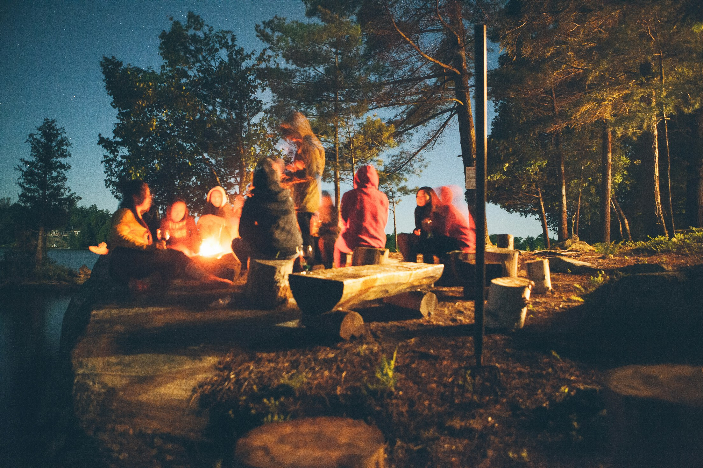
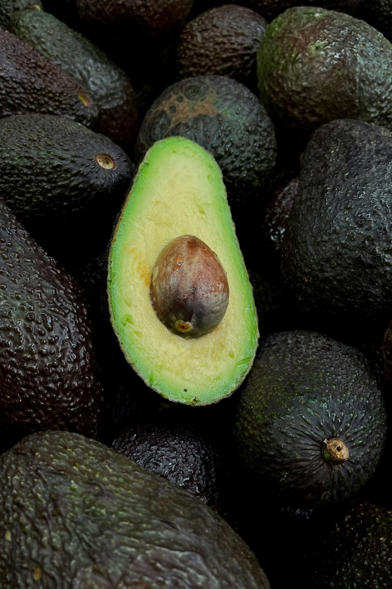
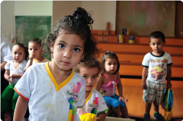
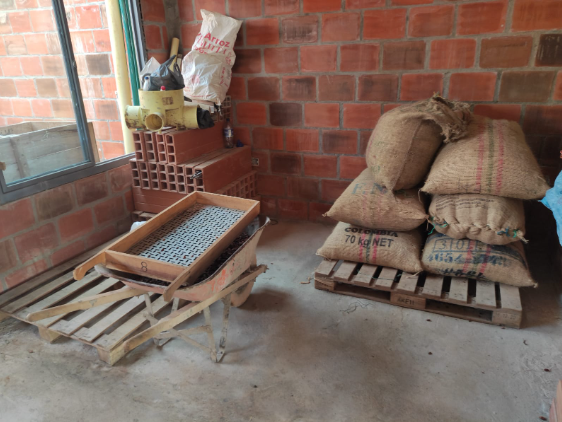
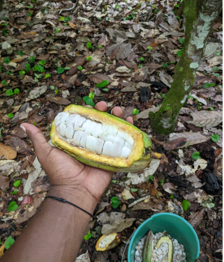
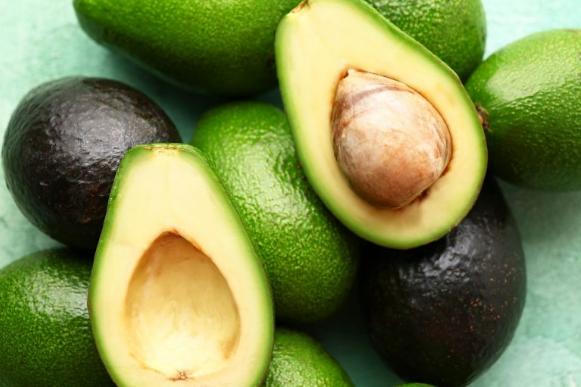
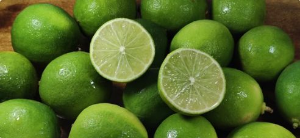
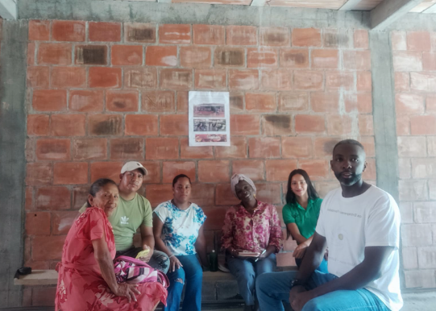
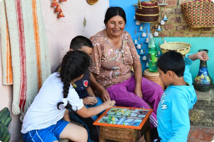
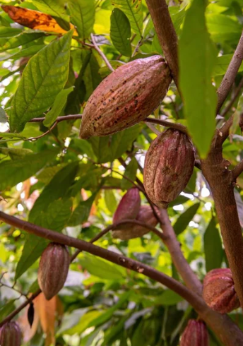

Impulsamos el desarrollo integral de familias productoras, la niñez y las comunidades del suroccidente colombiano mediante la educación, el fortalecimiento de capacidades asociativas y la apertura de mercados agrícolas de exportación.
En el año 2008, un grupo interdisciplinario de profesionales colombianos decidió crear la Fundación Huellas del Futuro (HDF) con una visión clara: promover programas y estrategias educativas orientadas a fortalecer el desarrollo humano integral del individuo, su familia y la comunidad en zonas urbanas y rurales de Colombia.
Trabajamos como agentes ejecutores articulando recursos, proyectos y cooperación con entidades locales, nacionales e internacionales para fomentar la paz, la estabilidad socioeconómica y el relevo generacional en el campo.
Desarrollo socioeconómico y cultural en zonas de posconflicto y paz total.
Convenios con entes públicos, embajadas y organismos multilaterales.
Capacitación lúdica, recreativa, técnica y productiva a la niñez y jóvenes.
Encadenamiento comercial internacional para productos de agricultores locales.

"Sembrar futuro es garantizar que la tierra provea con dignidad y que los niños de nuestros campos tengan oportunidades reales para crecer en paz."
Estructuramos proyectos sostenibles con rigor técnico y enfoque comunitario, generando autonomía económica y protección social en cada territorio.

Desarrollo RuralAsistencia técnica integral, adopción de Buenas Prácticas Agrícolas (BPA) y apertura de canales de exportación para pequeños y medianos productores del suroccidente.

Niñez y JuventudPrograma insignia desarrollado en Miranda (Cauca) que fortalece el desarrollo humano y la unidad familiar mediante talleres pedagógicos, lúdicos y de sano esparcimiento.

Paz y CohesiónArticulación productiva para víctimas, desplazados y familias campesinas en contextos de posconflicto, promoviendo la resiliencia y el emprendimiento comunitario sostenible.
Asesoramos y potenciamos cosechas de alto valor agronómico y comercial en el occidente colombiano, conectando a pequeños agricultores con compradores y exportadores.

Asesoramos a comunidades campesinas en el manejo agronómico de parcelas de cacao bajo sistemas agroforestales, garantizando prácticas de beneficio, fermentación y secado que resaltan sus notas frutales y florales.
Clones regionales de alta adaptabilidad y resistencia fitosanitaria.
Cultivado en asocio con maderables y plátano para conservar suelos.
Venta asociativa eliminando la intermediación abusiva.
Chocolatería fina artesanal y exportadores especializados.

Promovemos parcelas de Aguacate Hass con asistencia técnica especializada en nutrición vegetal, podas y control biológico para cumplir con estándares fitosanitarios de exportación hacia Europa y Norteamérica.
Monitoreo georreferenciado de fincas y planes de manejo ambiental.
Frutos homogéneos con materia seca óptima para transporte marítimo.
Tecnologías de riego eficiente y protección de cuencas microcuencas.
Soporte de ingresos estables para familias campesinas asociadas.

El limón Tahití representa una de las cadenas de mayor dinamismo para nuestros agricultores. Brindamos capacitación en selección postcosecha, lavado, calibrado y empaque para cumplir requerimientos de supermercados y exportadores.
Cosecha escalonada que garantiza flujo de caja durante todo el año.
Cosecha con tijera para evitar desgarros y prolongar vida útil en anaquel.
Centros de acopio comunitario para consolidar volumen de transporte.
Bioinsumos y reducción de agroquímicos sintéticos.

Las musáceas desempeñan un papel fundamental como sombrío temporal en el establecimiento del cacao y como fuente prioritaria de seguridad alimentaria para las familias rurales, generando ingresos periódicos de alta rotación local.
Aporte de biomasa al suelo y alimento fresco para los hogares.
Capacitación en deshoje fitosanitario y biofertilización foliar.
Ventas directas en plazas de mercado y programas de alimentación.
Fácil adopción por jóvenes rurales en procesos de aprendizaje.
Más de una década y media sembrando huellas de esperanza y progreso comprobable con entidades públicas y comunidades del suroccidente.
Un grupo interdisciplinario inscribe la Fundación Huellas del Futuro ante la Cámara de Comercio de Cali con Personería Jurídica No. 9986-50, sentando las bases para el desarrollo humano y la gestión de proyectos de cooperación.
Ejecutores oficiales del programa en el municipio de Miranda (Cauca), capacitando y acompañando a 500 niños y niñas en estimulación del desarrollo humano, valores y unidad familiar desde el aprendizaje lúdico-recreativo.
Intervención en comunidades rurales y urbanas de Miranda (Cauca), brindando herramientas psicoeducativas, deporte y cultura como alternativas para la prevención de riesgos sociales en adolescentes y niños.
Capacitación comercial y agronómica en Cacao, Aguacate, Cítricos y Musáceas, consolidando cosechas que superan las 23 toneladas anuales en fincas del suroccidente colombiano.
Reactivación estratégica de proyectos alineados con la Paz Total en Colombia, fortalecimiento de la sede institucional en Cali, articulación con ProColombia y organismos de cooperación internacional como la IAF.
Testimonios gráficos reales de nuestras visitas de campo, talleres lúdicos infantiles, cosechas y encuentros de formación con líderes y familias.


Cumplimos rigurosamente con todos los deberes de ley en Colombia para Entidades Sin Ánimo de Lucro (ESAL) y el Régimen Tributario Especial de la DIAN.
Con tu donación brindas insumos pedagógicos a la niñez de Miranda (Cauca), financias asesoría agronómica para campesinos y aceleras proyectos de exportación agrícola sostenible.
El progreso es real cuando transforma la mesa de los agricultores y el futuro de los niños.
"Antes vendíamos el cacao al primer comprador que pasaba y nos pagaba lo que quería. Con la Fundación aprendimos a fermentar bien, cuidar el aroma y hoy negociamos en grupo con mejores precios."
"El programa 'Infancia Feliz' en Miranda marcó una diferencia enorme. Nuestros hijos tuvieron recreación sana, talleres de pintura y valores en lugar de estar expuestos a la calle."
"La asistencia técnica en aguacate y cítricos nos enseñó a llevar registros y a cuidar la fruta como exige el mercado exterior. Nos sentimos acompañados por profesionales comprometidos."
Estamos a tu disposición para proyectos de cooperación, compras agrícolas al por mayor, donaciones o voluntariado.
Diligencia el formulario y nuestro equipo de proyectos te responderá en menos de 24 horas.